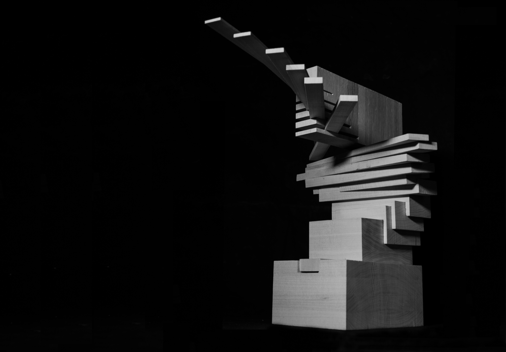
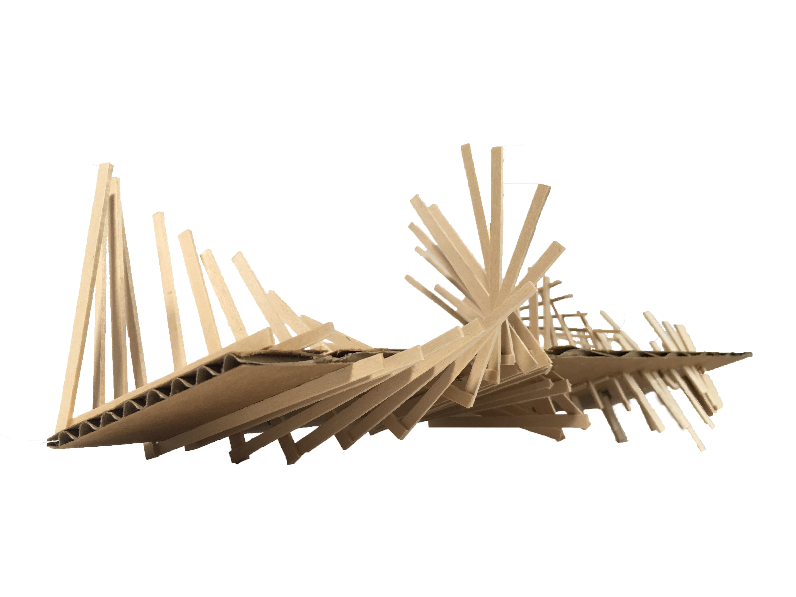
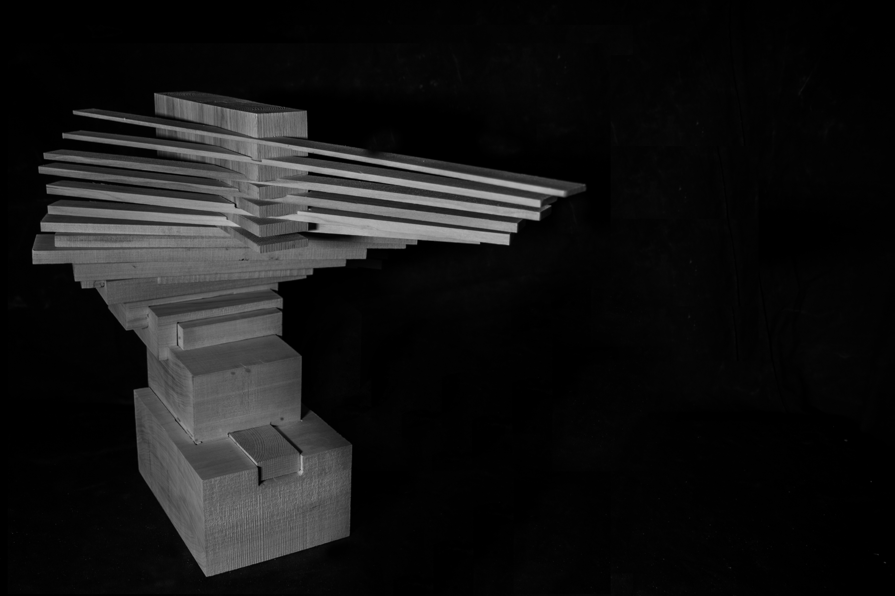
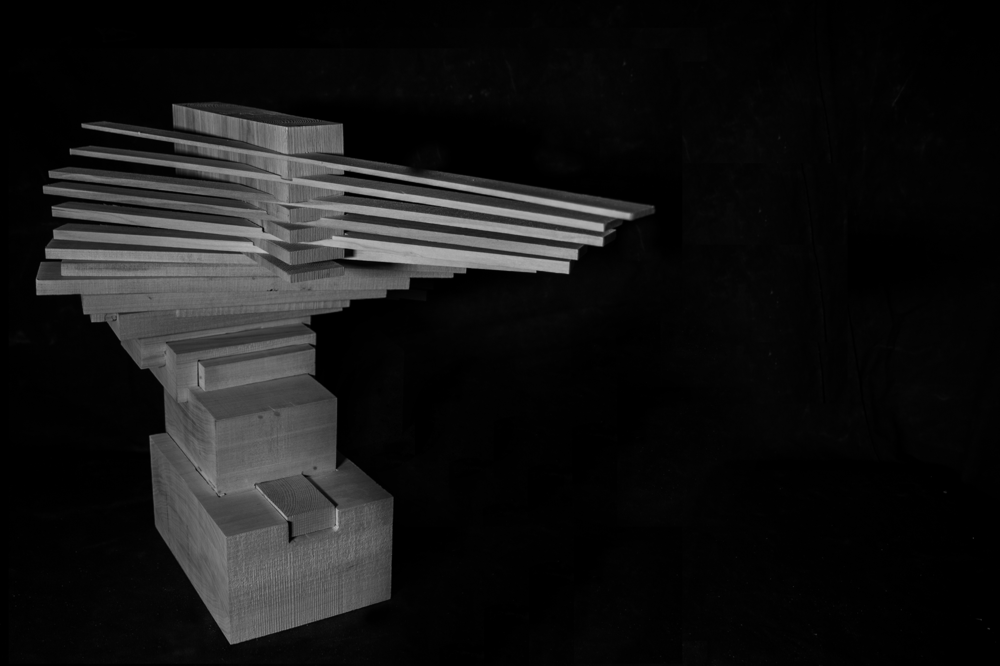

brandon smith
force
2016 | in collaboration with gil jang
force is an abstract sculpture that explores the transition and juxtaposition between two kitchen tools: an ice crusher and a vegetable chopper
force parallels the distinction of two actions (a clean chop and a rough press) through the transition of thin extended blades that sever the
material structure to nested masses that dominate and ground the base
the ending “twist” of motion reflects the rotational motion of the intial tools and suggests a sense of flight and weightlessness to draw
attention to the contrast with the massive bottom
force creates space through the same theme that the ice crusher utilizes: a central structure and arms/spikes that extrude
force derives its strong contrast of firm, linear masses with light, rotational gestures from the shown motion drawing
force was equally an exploration in materiality and tectonics and relied solely on wood joinery for structural support
force also contemplated the merits of a structural base and repeatedly altered orientation to establish a seamless sculpture
the created space is repetitive, evolving, and reflects both the idea of void and of power, symbolizing both the
ice crusher and the vegatable chopper



 
